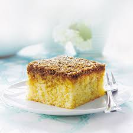

Min yndlingskage: Drømmekagen

Sådan laver du selv denne kage. Du skal først og fremmest bruge følgende ingredienser:
Til kagebunden bruges:
- 4 x æg
- 300g sukker
- 2dL mælk
- 50g smør
- 250g hvedemel
- 3 tsk bagepulver
- 1 tsk vaniljesukker
Til toppingen på kagen bruges:
- 100g smør
- 150g kokosmel
- 225g brunfarin
- 1/2dL mælk
Nu hvor du har klargjort alle dine ingredienser, er du nu klar til at lave kagen.
Følgende kommer der en liste, hvor du kan gennemgå hvert step for sig. De kommer her:
- Pisk æg og sukker lyst og luftigt.
- Varm imens mælk og smør (lillefingervarmt).
- Bland mel, bagepulver og vaniljesukker sammen. Vend det forsigtigt, drysset gennem en sigte, i dejen skiftevis med mælkeblandingen.
- Hæld dejen i en lille bradepande beklædt med bagepapir (ca. 5 x 22 x 30 cm) og bag kagen midt i ovnen.
- Kom smør, kokosmel, farin og mælk i en tykbundet gryde og bring det i kog under omrøring.
- Tag kagen ud (den skal være næsten færdigbagt) og skru op for ovnen. Fordel fyldet på kagen og bag den færdig, stadig midt i ovnen.
Bagetid
Ca. 20 min. ved 200° - traditionel ovn.
Bagetid med fyld
Ca. 5 min. ved 225° - traditionel ovn.